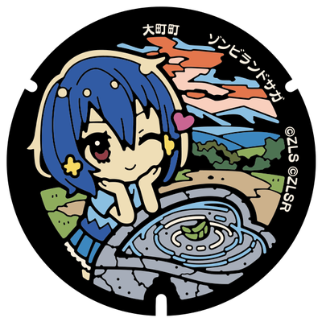

聖地巡礼スポット
今回の遠征で巡る予定の聖地巡礼スポットを、エリアごとにまとめています。

全14種類・佐賀県内6市に設置 ゾンビランドサガ マンホール 唐津・佐賀・伊万里にも設置場所あり。詳細はこちら ›唐津市（ゾンビランドサガ）
・唐津駅周辺：唐津駅／唐津市ふるさと会館アルピノ／唐津城 など
・西唐津駅周辺：唐津市歴史民俗資料館 など
・その他：鏡山展望台／波戸岬／虹ノ松原 など
聖地まとめサイト（1期・2期）：
https://anime-zls.hamutane.com/karatsu/zls-karatsu/
https://anime-zls.hamutane.com/karatsu/zlsr-karatsu/
佐賀市（ゾンビランドサガ）
佐賀城本丸歴史館を中心に、時間の許す限り市内を聖地巡礼します。
聖地まとめサイト：
https://anime-zls.hamutane.com/saga/zls-saga/
武雄市
武雄温泉／ゆめぎんが など
※途中、紺野純子がはねた交差点を通過予定です。
聖地巡礼参考サイト：
https://takeo-onsen-bussankan.com/20251205-1
長崎市
📺おすすめアニメ：『色づく世界の明日から』
大浦天主堂／長崎中華街／長崎市平和公園／グラバー園／稲佐山展望台 など
聖地巡礼参考サイト：
『色づく世界の明日から』→https://www.at-nagasaki.jp/course/iroduku
佐世保市
📺おすすめアニメ：『坂道のアポロン』／『「艦これ」 いつかあの海で』
展海峰／佐世保港／海上自衛隊佐世保史料館／九十九島パールシーリゾート／道の駅させぼっくす99 など
福岡市
ららぽーと福岡（νガンダム立像）
博多駅（度々アニメに登場）／みずほPayPayドーム（「君の膵臓をたべたい」など）／大濠公園（妖怪ウォッチ ひょうたん池の元ネタ）／福岡市博物館（ひょうたん池博物館の元ネタ）／大名・渡辺通（古着・ファッション系）／筥崎宮／さざえさん通り など
→ 妖怪ウォッチの聖地巡礼をしてもいいかも